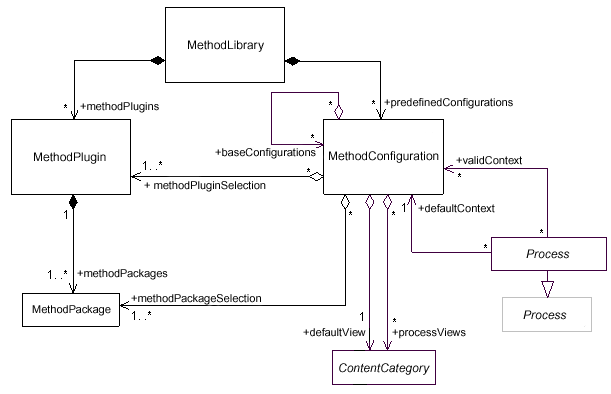

| Conceptos organizativos |
 |
|
Relaciones
Descripción principal
En esta sección se describen los conceptos que se utilizan sólo para organizar el contenido del método y los procesos en un entorno de autoría. Ninguna de estas abstracciones UMA está sujeta a publicación. Son:
Estas abstracciones, así como sus relaciones, se presentan con el siguiente diagrama de clase UML 2.0:  |
© Copyright IBM Corp. 1987, 2005 Reservados todos los derechos |